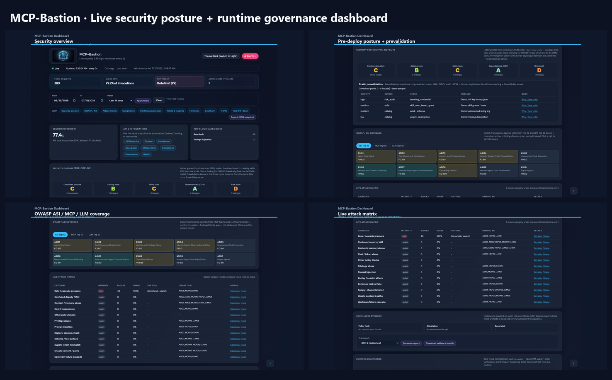

MCP-Bastion Documentation
Documentation bible
Version: 4.0.0
Purpose: Single entry point for the full system — concepts, every feature, attack→defense demos (with GIFs), dashboard, multi-language suite, and ops.
Published: https://vaquarkhan.github.io/MCP-Bastion/guide/bible.html
Prefer this handbook over stuffing the root README. The README stays a thin index; this page is the bible.
Visual tour (start here)
Attack → defense (video-style GIF)

Scripted terminal demos: ATTACK → BASTION → BLOCK/REDACT → VALUE for eight hero features.
Live: PYTHONPATH=src python -m examples.attack_demos --strict · Per-feature GIFs in ATTACK_DEMOS.md and FEATURE_DEEP_DIVE.md
Dashboard walkthrough

Posture, OWASP heatmaps, attack matrix, governance, forensics, FinOps.
Local: mcp-bastion dashboard --demo
Architecture at a glance
flowchart LR Scan[Scan<br/>catalog checks] --> Test[Test<br/>redteam] Test --> Enforce[Enforce<br/>middleware / proxy] Enforce --> Tools[MCP tools]
| Diagram | What it shows |
|---|---|
 |
Scan → Test → Enforce lifecycle |
 |
Reversible PII abstract / hydrate |
 |
Hybrid MCP transport paths |
 |
Opt-in enterprise pillars |
How to use this bible
| You want… | Go to |
|---|---|
| Install & first green run | USER_GUIDE.md §3 · QUICK_START.md |
| Every control: issue → solution → benefits | FEATURE_DEEP_DIVE.md |
| Runnable attack demos + per-feature GIFs | ATTACK_DEMOS.md |
| Dashboard panels explained | dashboard/README.md · DASHBOARD_AND_OBSERVABILITY.md · Part F in deep dive |
| Metrics / OTEL (optional) | METRICS.md · OTEL.md — OTEL not required |
| Java / TS / Go / .NET / Kotlin / Rust | MULTI_LANGUAGE_SUITE.md · suite repo |
| YAML reference | POLICY_AS_CODE.md · FEATURES.md |
| CLI | CLI.md |
| CRA / SBOM | CRA_COMPLIANCE.md |
Repos: MCP-Bastion = security engine (mcp-bastion-python).
mcp-bastion-suite = multi-language connectors (shared bastion.yaml).
Part 1 — What Bastion is
MCP-Bastion is security and governance middleware for the Model Context Protocol. It sits on the request/response path of tools, resources, and prompts — enforcing policy before untrusted model-driven actions reach your systems, and before sensitive output re-enters the model.
flowchart TB Client[AI agent / MCP client] Bastion[MCP-Bastion<br/>middleware or HTTP proxy] Tools[Your MCP server / tools] Client -->|"JSON-RPC"| Bastion Bastion -->|"allow / block / redact / vault / observe"| Tools
| Property | Choice |
|---|---|
| Policy | One bastion.yaml |
| Defaults | Safe; advanced features opt-in |
| Infra | Zero mandatory cloud (memory default; Redis optional) |
| Deploy | In-process library or serve --proxy boundary |
Part 2 — Attack → defense gallery (GIFs)
Each clip is a four-beat storyboard: Attack → Evaluate → Outcome → Benefit.
Regenerate: python scripts/generate_attack_demo_gifs.py
01 Prompt injection (prompt_guard) — -32001

02 PII leakage (pii) — redaction

03 Rate / denial of wallet (rate_limit) — -32002

04 Path traversal (content_filter) — -32005

05 Unauthorized tool (rbac) — -32006

06 Schema bypass (schema_validation) — -32007

07 Replay (replay_guard) — -32008

08 Cost overrun (cost_tracker) — -32009

Full narrative + CLI: ATTACK_DEMOS.md · Issue/solution text: FEATURE_DEEP_DIVE.md
Part 3 — Dashboard (local UI bible)

Zero-infra local UI: mcp-bastion dashboard --demo → http://127.0.0.1:7000/
| Panel | Why it exists |
|---|---|
| Overview KPIs | Instant pressure signal |
| Security posture A–F | Pre-deploy ship/no-ship from scan JSON |
| Prevalidation + issue guides | Sonar-style findings → Bastion knobs → OWASP |
| OWASP / ASI / MCP / LLM heatmaps | Coverage vs taxonomies |
| Live attack matrix | Category pressure + samples |
| Runtime governance tiles | RBAC, prompt, rate/cost, PII, Agent IAM, transport |
| FinOps burn & reduction | Actual vs would-have-been; tokens avoided by blocks |
| Forensics Trace / Reproduce | Why blocked, side detail |
| Agents | Confused-deputy denials + IAM map |
| Compliance evidence | Hashes + SOC2/GDPR/ISO/NIST/ASI packs |
| Observe banner | Would-have-blocked when mode: observe |
flowchart LR ATR[ATR YAML] --> CF[content_filter] Feeds[Threat feeds] --> CF CF --> Decision[Block / allow] Audit[Audit JSONL] --> Report[mcp-bastion report]

Deep panel guide: dashboard/README.md · FEATURE_DEEP_DIVE.md Part F · METRICS.md · DASHBOARD_AND_OBSERVABILITY.md
Part 4 — Feature map (all pillars)
Use the deep dive for issue → how Bastion solves it → benefits on every control:
→ FEATURE_DEEP_DIVE.md (canonical)
Quick index:
| Family | Examples |
|---|---|
| Core 10 | prompt_guard, pii, rate_limit, circuit_breaker, content_filter, rbac, schema, replay, cost, semantic_cache |
| Extended / FinOps | discovery_filter, output_budget, cost_policy, argument_guards, response_scan |
| Privacy | pii_vault, secrets.redact_patterns |
| Governance | agent_iam, server_verification, canary, ATR, behavior_fingerprint, catalog pin |
| Transport | serve --proxy, transport_hardening, hybrid mcp_transport |
| Compliance | SBOM / CRA, attest export, report CLI |
Enablement YAML: FEATURES.md · Counts: PILLARS.md
Part 5 — Multi-language (suite)
flowchart TB App[Your app<br/>Nest / Spring / FastAPI / .NET / Go / …] Suite[mcp-bastion-suite<br/>adapters · sidecar · proxy] Engine[mcp-bastion-python<br/>Scan → Test → Enforce] App --> Suite Suite -->|"shared bastion.yaml"| Engine
| Stack | Path |
|---|---|
| Python / FastMCP | This repo — in-process middleware |
| TypeScript / Nest / Express | mcp-bastion-suite adapters |
| Java / Spring / Quarkus | Suite + proxy |
| Go / .NET / Kotlin / Rust | Suite tutorials + examples |
Part 6 — Operate
| Task | Command / doc |
|---|---|
| Validate policy | mcp-bastion validate -c bastion.yaml |
| Attack demos | python -m examples.attack_demos --strict |
| Dashboard | mcp-bastion dashboard --demo |
| Scan catalog | mcp-bastion scan tools.json |
| Proxy boundary | mcp-bastion serve --proxy · GATEWAY_BOUNDARY.md |
| Regenerate attack GIFs | python scripts/generate_attack_demo_gifs.py |
| Regenerate dashboard GIF | mcp-bastion dashboard --demo then python scripts/capture_dashboard_demo.py |
| Rebuild docs HTML | python scripts/build_docs_site.py |
Part 7 — Learning paths
- Developer (30 min): Quick start → Attack demos GIF +
--only content_filter→ Features enablement - Security reviewer: Bible visual tour → Feature deep dive → Attack prevention → Dashboard matrix
- Platform / multi-lang: Multi-language suite → Proxy tutorial → CI Action in suite
- Compliance: CRA SBOM → attest/report → Dashboard compliance panel
Asset index
| Asset | Path |
|---|---|
| Attack tour GIF | docs/images/mcp-bastion-attack-defense-tour.gif |
| Per-feature GIFs | docs/images/attack-demos/*.gif |
| Dashboard tour GIF | docs/images/mcp-bastion-dashboard-tour.gif |
| Dashboard collage | docs/images/mcp-bastion-dashboard.png |
| Architecture SVGs | images/mcp-bastion-*-*.svg (scan/enforce, governance, canary, …) |
| Site copies | docs/site/assets/ (+ attack-demos/) |
Related published pages
- https://vaquarkhan.github.io/MCP-Bastion/guide/bible.html
- https://vaquarkhan.github.io/MCP-Bastion/guide/attack-demos.html
- https://vaquarkhan.github.io/MCP-Bastion/guide/feature-deep-dive.html
- https://vaquarkhan.github.io/MCP-Bastion/guide/multi-language.html
- https://vaquarkhan.github.io/MCP-Bastion/guide/user-guide.html